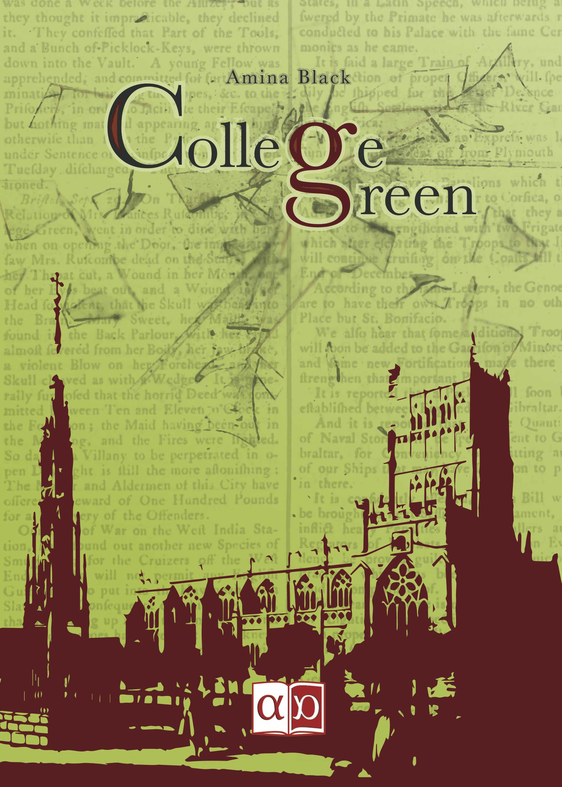

College Green
Ora disponibile
con Amazon Prime

con Amazon Prime
Amina Black, al secolo Beatrice Spada, è nata a Pavia nel 1995. Accanto al diploma scientifico, ha studiato musica e recitazione per parecchi anni. Attualmente frequenta il corso di laurea in Design della Comunicazione presso il Politecnico di Milano. Le sue vere passioni rimangono però la lettura e soprattutto la scrittura, dove ama cimentarsi con diversi generi letterari. "College Green" è la sua prima true crime story a essere pubblicata.

La prima pubblicazione firmata Amina Black è un giallo breve intitolato Mr. Fox, che precede di qualche mese l’uscita sul mercato di College Green, edito da Aporema Edizioni. In ordine di stesura, però, i due testi sono rispettivamente il quinto e il quarto sfornati dalla penna (e dalla tastiera) dell’autrice.
Infatti, è nel 2011 che l’aspirante scrittrice, adolescente, inizia la stesura del suo primo libro, che completa in circa un anno. Un fantasy, a posteriori abbastanza bruttino, di circa 300 pagine.
In seguito, Amina Black resta sullo stesso filone di genere, e in circa un milione e mezzo di battute complessive, scrive altri due romanzi, questa volta più soddisfacenti, ma ancora da rimaneggiare.
Il quarto cimento è il true-crime storico College Green; la prima stesura viene ultimata nel 2016, mentre la pubblicazione ufficiale arriva a luglio 2018.
Il mini giallo Mr. Fox, scritto nel maggio 2017, è invece auto-pubblicato dall’autrice a febbraio 2018. Auto-pubblicato per poter sperimentare in prima persona il design tipografico, sua materia di studio universitario.
Il sesto romanzo, in attesa di essere rielaborato, è un noir ad ambientazione rinascimentale. Frattanto, l’autrice sta lavorando a un settimo scritto, che prevede di terminare entro marzo 2019.
Settembre 2018 - College Green disponibile su Amazon con spedizione veloce per abbonati al servizio Prime
Luglio 2018 - In uscita: College Green
Per contattare l'autrice, puoi scrivere a questo indirizzo e-mail: amina.black94@gmail.com
Se vuoi saperne di più sull'editore, invece, puoi andare a curiosare a questo indirizzo
copyright © Beatrice Spada, alias Amina Black